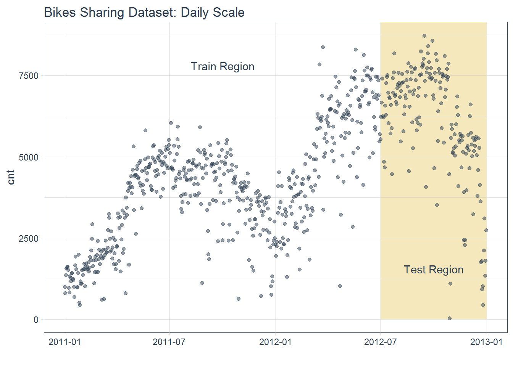
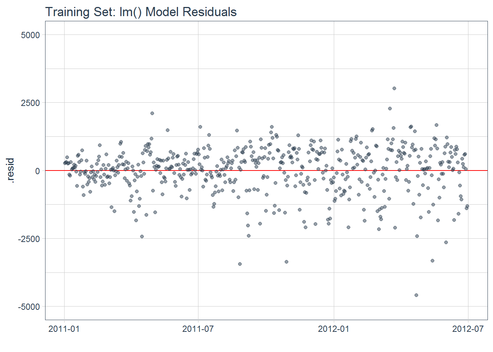
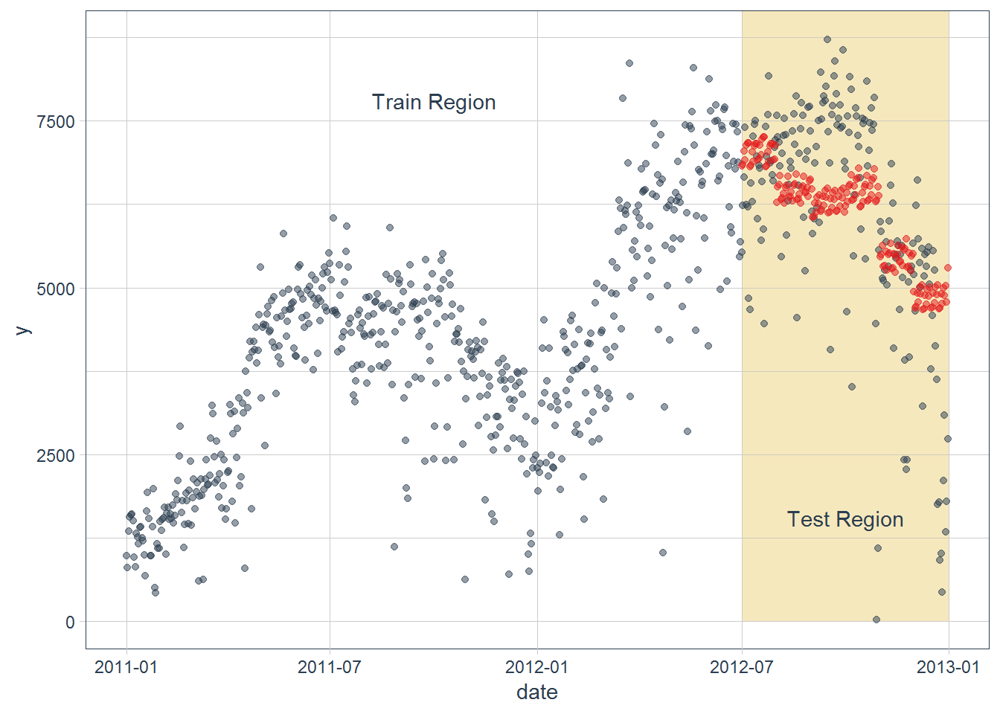
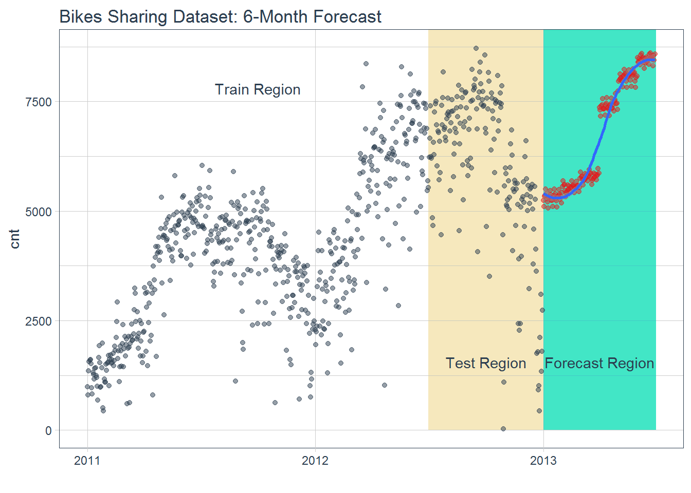
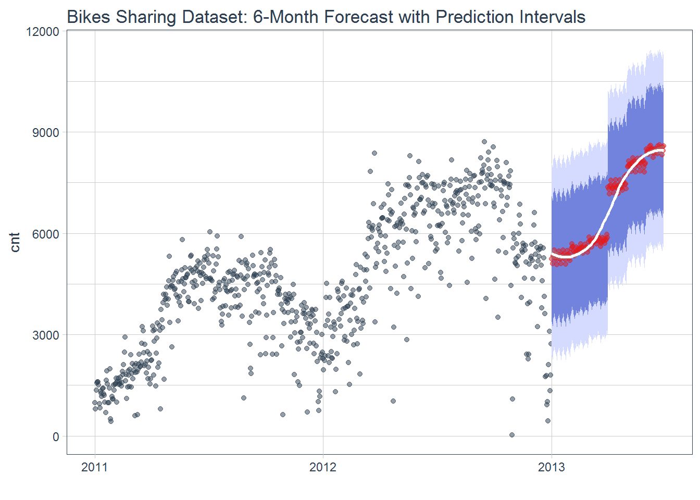
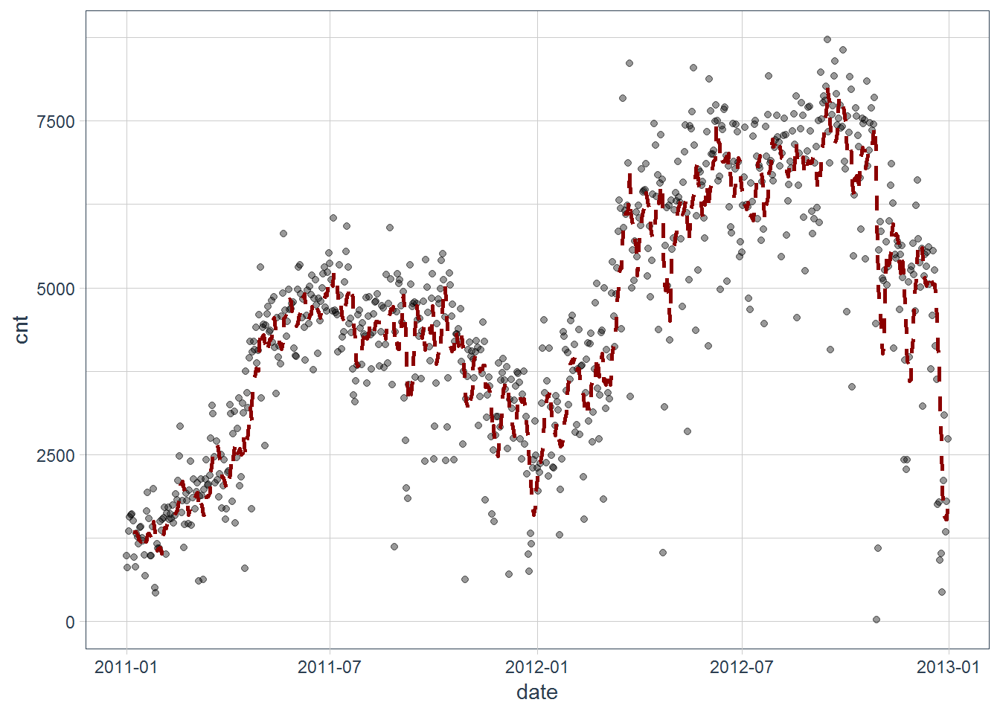

5. Dự báo chuỗi thời gian với timetk¶
5.1. Dữ liệu¶
library(timetk)
library(tidyverse)
library(lubridate)
library(tidyquant)
bikes <- read_csv("data/day.csv")
# Select date and count
bikes <- bikes %>%
select(dteday, cnt) %>%
rename(date = dteday)
bikes %>% head
## # A tibble: 6 x 2
## date cnt
## <date> <int>
## 1 2011-01-01 985
## 2 2011-01-02 801
## 3 2011-01-03 1349
## 4 2011-01-04 1562
## 5 2011-01-05 1600
## 6 2011-01-06 1606
# Visualize data and training/testing regions
bikes %>%
ggplot(aes(x = date, y = cnt)) +
geom_rect(xmin = as.numeric(ymd("2012-07-01")),
xmax = as.numeric(ymd("2013-01-01")),
ymin = 0, ymax = 10000,
fill = palette_light()[[4]], alpha = 0.01) +
annotate("text", x = ymd("2011-10-01"), y = 7800,
color = palette_light()[[1]], label = "Train Region") +
annotate("text", x = ymd("2012-10-01"), y = 1550,
color = palette_light()[[1]], label = "Test Region") +
geom_point(alpha = 0.5, color = palette_light()[[1]]) +
labs(title = "Bikes Sharing Dataset: Daily Scale", x = "") +
theme_tq()

- Dữ liệu train/test
# Split into training and test sets
train <- bikes %>%
filter(date < ymd("2012-07-01"))
test <- bikes %>%
filter(date >= ymd("2012-07-01"))
- Tạo thêm dữ liệu pattern
train_augmented <- train %>%
tk_augment_timeseries_signature()
train_augmented %>% head
## # A tibble: 6 x 30
## date cnt index.num diff year year.iso half quarter month
## <date> <int> <int> <int> <int> <int> <int> <int> <int>
## 1 2011-01-01 985 1.29e9 NA 2011 2010 1 1 1
## 2 2011-01-02 801 1.29e9 86400 2011 2010 1 1 1
## 3 2011-01-03 1349 1.29e9 86400 2011 2011 1 1 1
## 4 2011-01-04 1562 1.29e9 86400 2011 2011 1 1 1
## 5 2011-01-05 1600 1.29e9 86400 2011 2011 1 1 1
## 6 2011-01-06 1606 1.29e9 86400 2011 2011 1 1 1
## # ... with 21 more variables: month.xts <int>, month.lbl <ord>, day <int>,
## # hour <int>, minute <int>, second <int>, hour12 <int>, am.pm <int>,
## # wday <int>, wday.xts <int>, wday.lbl <ord>, mday <int>, qday <int>,
## # yday <int>, mweek <int>, week <int>, week.iso <int>, week2 <int>,
## # week3 <int>, week4 <int>, mday7 <int>
- Mô hình
library(broom)
fit_lm <- lm(cnt ~ ., data = train_augmented)
fit_lm %>% summary
##
## Call:
## lm(formula = cnt ~ ., data = train_augmented)
##
## Residuals:
## Min 1Q Median 3Q Max
## -4590.0 -369.0 92.5 564.1 3016.8
##
## Coefficients: (16 not defined because of singularities)
## Estimate Std. Error t value Pr(>|t|)
## (Intercept) 3.538e+08 1.600e+08 2.211 0.027478 *
## date 4.969e+02 2.222e+02 2.237 0.025724 *
## index.num NA NA NA NA
## diff NA NA NA NA
## year -1.802e+05 8.123e+04 -2.218 0.026986 *
## year.iso 5.016e+02 6.488e+02 0.773 0.439756
## half 2.775e+03 8.144e+02 3.407 0.000708 ***
## quarter 1.084e+05 2.440e+04 4.443 1.09e-05 ***
## month -5.057e+04 9.460e+03 -5.346 1.35e-07 ***
## month.xts NA NA NA NA
## month.lbl.L NA NA NA NA
## month.lbl.Q -3.875e+03 2.871e+02 -13.493 < 2e-16 ***
## month.lbl.C 2.725e+03 6.049e+02 4.506 8.19e-06 ***
## month.lbl^4 4.994e+02 1.636e+02 3.053 0.002385 **
## month.lbl^5 -2.431e+03 5.074e+02 -4.792 2.16e-06 ***
## month.lbl^6 7.158e+02 1.967e+02 3.639 0.000301 ***
## month.lbl^7 2.760e+02 2.319e+02 1.190 0.234572
## month.lbl^8 2.147e+03 4.138e+02 5.187 3.07e-07 ***
## month.lbl^9 NA NA NA NA
## month.lbl^10 1.056e+03 2.356e+02 4.482 9.12e-06 ***
## month.lbl^11 NA NA NA NA
## day -1.582e+03 2.985e+02 -5.300 1.72e-07 ***
## hour NA NA NA NA
## minute NA NA NA NA
## second NA NA NA NA
## hour12 NA NA NA NA
## am.pm NA NA NA NA
## wday -3.730e+01 3.888e+01 -0.959 0.337821
## wday.xts NA NA NA NA
## wday.lbl.L NA NA NA NA
## wday.lbl.Q 5.325e+01 1.304e+02 0.408 0.683151
## wday.lbl.C 2.369e+01 1.182e+02 0.200 0.841238
## wday.lbl^4 -3.157e+00 1.066e+02 -0.030 0.976385
## wday.lbl^5 -4.033e+01 1.015e+02 -0.397 0.691278
## wday.lbl^6 1.542e+02 1.000e+02 1.541 0.123914
## mday NA NA NA NA
## qday 1.200e+03 2.687e+02 4.465 9.82e-06 ***
## yday NA NA NA NA
## mweek -4.302e+02 2.115e+02 -2.034 0.042421 *
## week -2.230e+02 2.295e+02 -0.971 0.331822
## week.iso NA NA NA NA
## week2 6.551e+01 8.445e+01 0.776 0.438242
## week3 2.384e+01 4.746e+01 0.502 0.615633
## week4 -5.028e+00 3.837e+01 -0.131 0.895802
## mday7 -1.358e+02 1.362e+02 -0.997 0.319240
## ---
## Signif. codes: 0 '***' 0.001 '**' 0.01 '*' 0.05 '.' 0.1 ' ' 1
##
## Residual standard error: 882.2 on 517 degrees of freedom
## (1 observation deleted due to missingness)
## Multiple R-squared: 0.747, Adjusted R-squared: 0.7333
## F-statistic: 54.52 on 28 and 517 DF, p-value: < 2.2e-16
fit_lm %>%
augment() %>%
ggplot(aes(x = date, y = .resid)) +
geom_hline(yintercept = 0, color = "red") +
geom_point(color = palette_light()[[1]], alpha = 0.5) +
theme_tq() +
labs(title = "Training Set: lm() Model Residuals", x = "") +
scale_y_continuous(limits = c(-5000, 5000))

- Tạo dữ liệu test
test_augmented <- test %>%
tk_augment_timeseries_signature()
test_augmented
## # A tibble: 184 x 30
## date cnt index.num diff year year.iso half quarter month
## <date> <int> <int> <int> <int> <int> <int> <int> <int>
## 1 2012-07-01 5531 1.34e9 NA 2012 2012 2 3 7
## 2 2012-07-02 6227 1.34e9 86400 2012 2012 2 3 7
## 3 2012-07-03 6660 1.34e9 86400 2012 2012 2 3 7
## 4 2012-07-04 7403 1.34e9 86400 2012 2012 2 3 7
## 5 2012-07-05 6241 1.34e9 86400 2012 2012 2 3 7
## 6 2012-07-06 6207 1.34e9 86400 2012 2012 2 3 7
## 7 2012-07-07 4840 1.34e9 86400 2012 2012 2 3 7
## 8 2012-07-08 4672 1.34e9 86400 2012 2012 2 3 7
## 9 2012-07-09 6569 1.34e9 86400 2012 2012 2 3 7
## 10 2012-07-10 6290 1.34e9 86400 2012 2012 2 3 7
## # ... with 174 more rows, and 21 more variables: month.xts <int>,
## # month.lbl <ord>, day <int>, hour <int>, minute <int>, second <int>,
## # hour12 <int>, am.pm <int>, wday <int>, wday.xts <int>, wday.lbl <ord>,
## # mday <int>, qday <int>, yday <int>, mweek <int>, week <int>,
## # week.iso <int>, week2 <int>, week3 <int>, week4 <int>, mday7 <int>
yhat_test <- predict(fit_lm, newdata = test_augmented)
pred_test <- test %>%
add_column(yhat = yhat_test) %>%
mutate(.resid = cnt - yhat)
pred_test
## # A tibble: 184 x 4
## date cnt yhat .resid
## <date> <int> <dbl> <dbl>
## 1 2012-07-01 5531 6827. -1296.
## 2 2012-07-02 6227 6840. -613.
## 3 2012-07-03 6660 7044. -384.
## 4 2012-07-04 7403 6905. 498.
## 5 2012-07-05 6241 7136. -895.
## 6 2012-07-06 6207 7166. -959.
## 7 2012-07-07 4840 7167. -2327.
## 8 2012-07-08 4672 6816. -2144.
## 9 2012-07-09 6569 6828. -259.
## 10 2012-07-10 6290 7033. -743.
## # ... with 174 more rows
- So sánh kết quả
ggplot(aes(x = date), data = bikes) +
geom_rect(xmin = as.numeric(ymd("2012-07-01")),
xmax = as.numeric(ymd("2013-01-01")),
ymin = 0, ymax = 10000,
fill = palette_light()[[4]], alpha = 0.01) +
annotate("text", x = ymd("2011-10-01"), y = 7800,
color = palette_light()[[1]], label = "Train Region") +
annotate("text", x = ymd("2012-10-01"), y = 1550,
color = palette_light()[[1]], label = "Test Region") +
geom_point(aes(x = date, y = cnt), data = train, alpha = 0.5, color = palette_light()[[1]]) +
geom_point(aes(x = date, y = cnt), data = pred_test, alpha = 0.5, color = palette_light()[[1]]) +
geom_point(aes(x = date, y = yhat), data = pred_test, alpha = 0.5, color = palette_light()[[2]]) +
theme_tq()

- Độ chính xác mô hình
test_residuals <- pred_test$.resid
pct_err <- test_residuals/pred_test$cnt * 100 # Percentage error
me <- mean(test_residuals, na.rm=TRUE)
rmse <- mean(test_residuals^2, na.rm=TRUE)^0.5
mae <- mean(abs(test_residuals), na.rm=TRUE)
mape <- mean(abs(pct_err), na.rm=TRUE)
mpe <- mean(pct_err, na.rm=TRUE)
error_tbl <- tibble(me, rmse, mae, mape, mpe)
error_tbl
## # A tibble: 1 x 5
## me rmse mae mape mpe
## <dbl> <dbl> <dbl> <dbl> <dbl>
## 1 -49.8 1448. 1061. 188. -174.
- Forecast
# Extract bikes index
idx <- bikes %>%
tk_index()
# Get time series summary from index
bikes_summary <- idx %>%
tk_get_timeseries_summary()
# Tạo dữ liệu mới
idx_future <- idx %>%
tk_make_future_timeseries(n_future = 180)
data_future <- idx_future %>%
tk_get_timeseries_signature() %>%
rename(date = index)
pred_future <- predict(fit_lm, newdata = data_future)
#Tạo dữ liệu mới
bikes_future <- data_future %>%
select(date) %>%
add_column(cnt = pred_future)
bikes %>%
ggplot(aes(x = date, y = cnt)) +
geom_rect(xmin = as.numeric(ymd("2012-07-01")),
xmax = as.numeric(ymd("2013-01-01")),
ymin = 0, ymax = 10000,
fill = palette_light()[[4]], alpha = 0.01) +
geom_rect(xmin = as.numeric(ymd("2013-01-01")),
xmax = as.numeric(ymd("2013-07-01")),
ymin = 0, ymax = 10000,
fill = palette_light()[[3]], alpha = 0.01) +
annotate("text", x = ymd("2011-10-01"), y = 7800,
color = palette_light()[[1]], label = "Train Region") +
annotate("text", x = ymd("2012-10-01"), y = 1550,
color = palette_light()[[1]], label = "Test Region") +
annotate("text", x = ymd("2013-4-01"), y = 1550,
color = palette_light()[[1]], label = "Forecast Region") +
geom_point(alpha = 0.5, color = palette_light()[[1]]) +
geom_point(aes(x = date, y = cnt), data = bikes_future,
alpha = 0.5, color = palette_light()[[2]]) +
geom_smooth(aes(x = date, y = cnt), data = bikes_future,
method = 'loess') +
labs(title = "Bikes Sharing Dataset: 6-Month Forecast", x = "") +
theme_tq()

- Độ chính xác mô hình
# Calculate standard deviation of residuals
test_resid_sd <- sd(test_residuals)
bikes_future <- bikes_future %>%
mutate(
lo.95 = cnt - 1.96 * test_resid_sd,
lo.80 = cnt - 1.28 * test_resid_sd,
hi.80 = cnt + 1.28 * test_resid_sd,
hi.95 = cnt + 1.96 * test_resid_sd
)
bikes %>%
ggplot(aes(x = date, y = cnt)) +
geom_point(alpha = 0.5, color = palette_light()[[1]]) +
geom_ribbon(aes(ymin = lo.95, ymax = hi.95), data = bikes_future,
fill = "#D5DBFF", color = NA, size = 0) +
geom_ribbon(aes(ymin = lo.80, ymax = hi.80, fill = key), data = bikes_future,
fill = "#596DD5", color = NA, size = 0, alpha = 0.8) +
geom_point(aes(x = date, y = cnt), data = bikes_future,
alpha = 0.5, color = palette_light()[[2]]) +
geom_smooth(aes(x = date, y = cnt), data = bikes_future,
method = 'loess', color = "white") +
labs(title = "Bikes Sharing Dataset: 6-Month Forecast with Prediction Intervals", x = "") +
theme_tq()

library(tidyquant)
bikes %>%
ggplot(aes(date, cnt)) +
geom_point(alpha = 0.4) +
geom_ma(n = 7, col = "darkred", size = 0.9) +
theme_tq()
